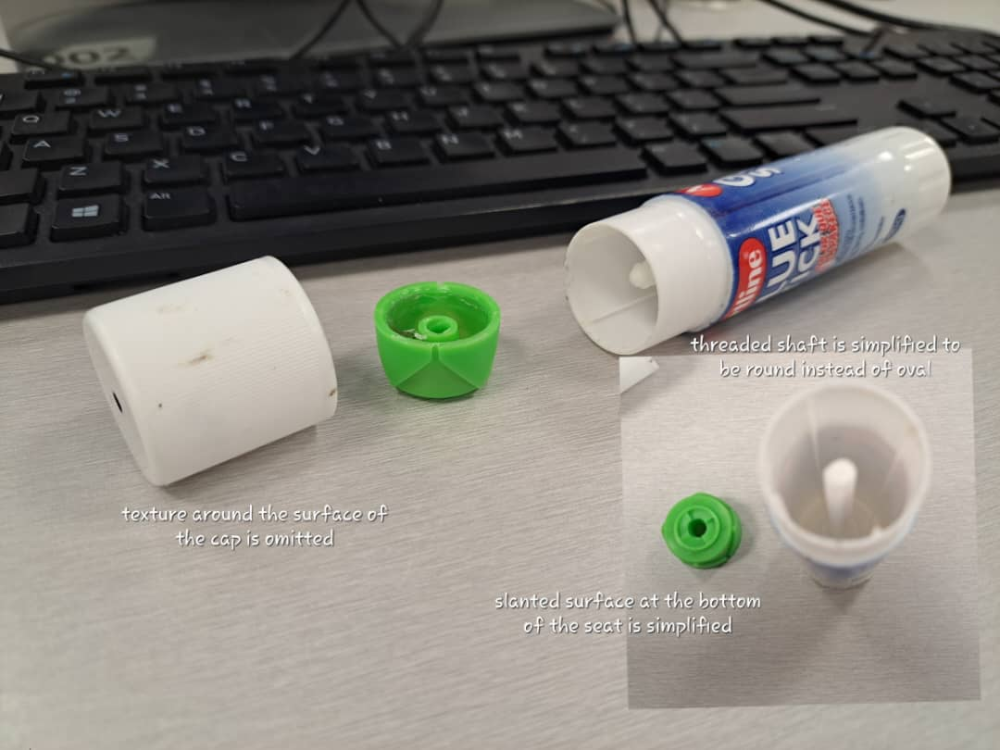
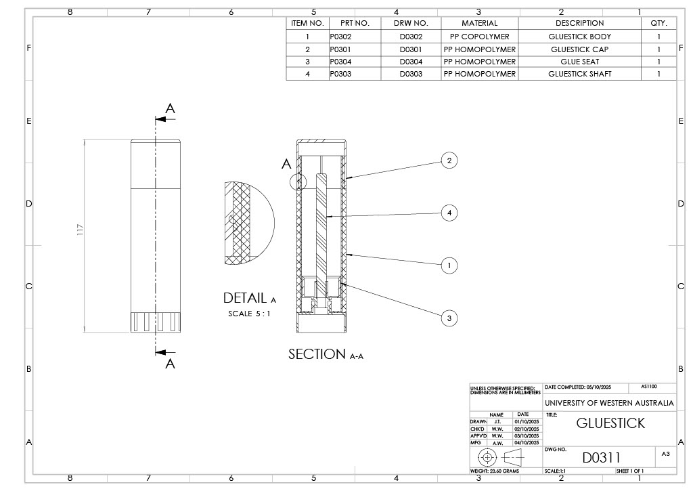
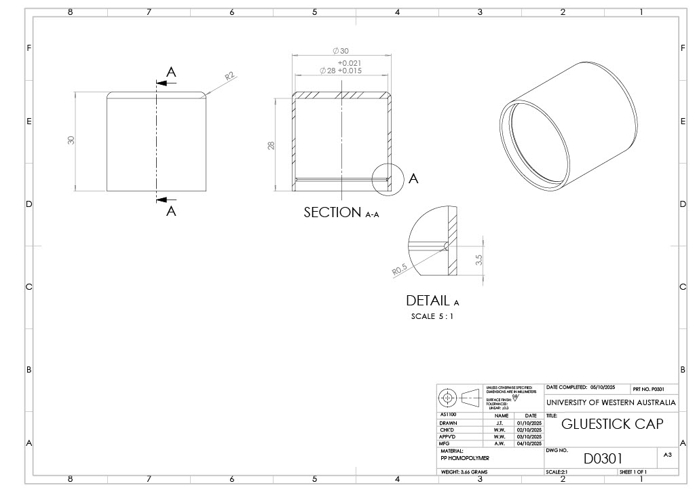
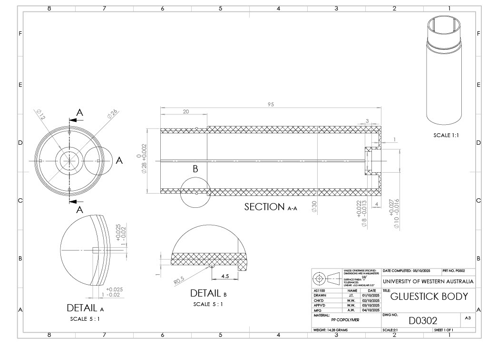
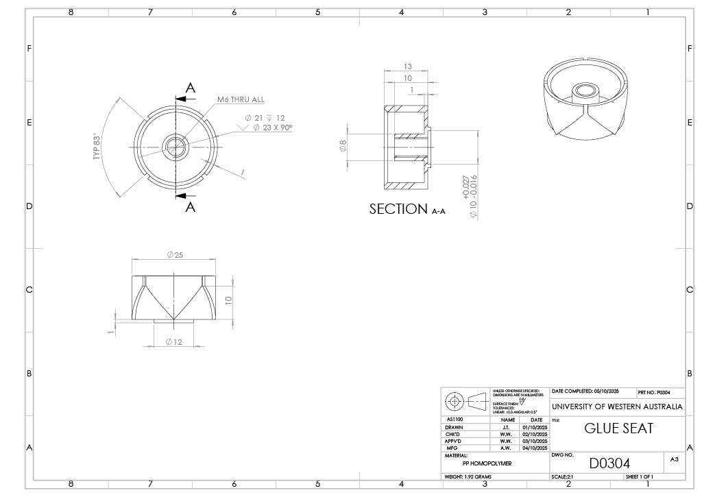
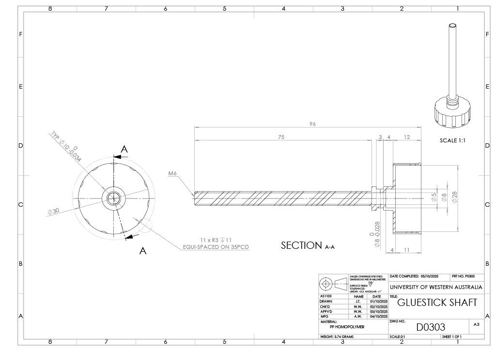
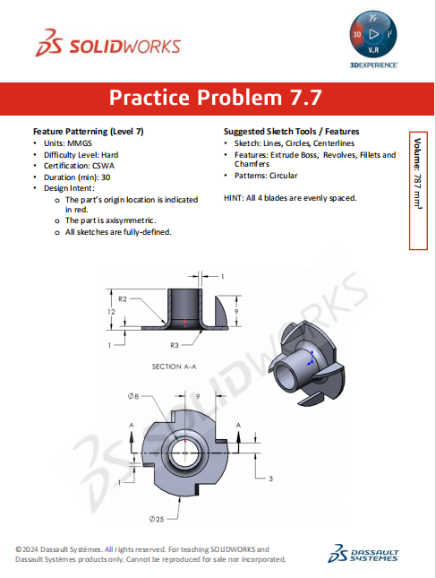
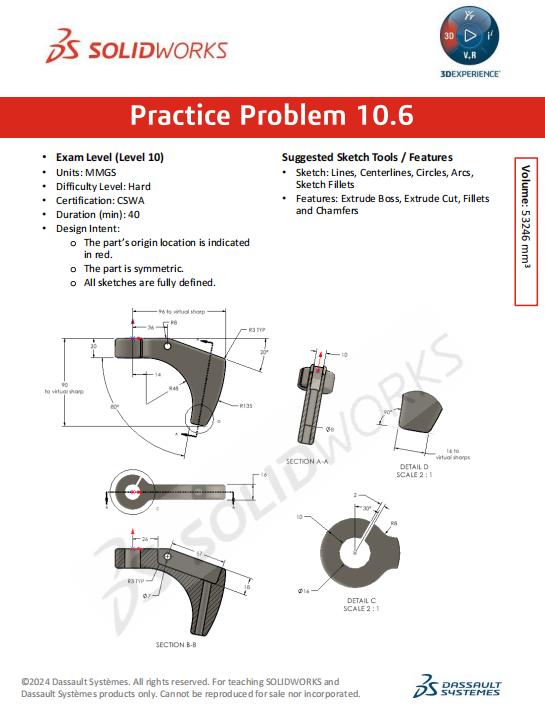

Projects
Project 1 - Assembly Project with Technical Drawings
Software: SolidWorks
Parametric Design:
Engineered a four-part assembly (including cap, body, seat and shaft) using advanced modeling techniques and assembly management.
AS1100 Compliance:
Produced professional technical drawings featuring sectional and detail views, tolerancing, and surface finish specifications.
Advanced CAD Features:
Utilized circular patterning on PCD, M6 thread modeling, and mass property evaluation for design validation.
Manufacturing Focused:
Specified materials (PP Copolymer/Homopolymer) and generated a comprehensive Bill of Materials (BOM) for production readiness







Project 2 - Mechanical Component Model
Software: SolidWorks
This simplified T-nut model was developed as part of Practice Problem 7.7 from the
Dassault Systèmes SOLIDWORKS CSWA (Certified SOLIDWORKS Associate) training
curriculum.
Key technical features:
- Proficiency in parametric sketching following given design constraints and dimensions
- Revolved base and use of offset entities for sketching the central hub
- Use of reference geometry for blade positioning

Project 3 - Advanced Parametric Design
Software: SolidWorks
This model was developed as part of Practice Problem 10.6 from the
Dassault Systèmes SOLIDWORKS CSWA (Certified SOLIDWORKS Associate) training
curriculum.
Key technical features:
- integration of virtual sharps for critical dimensioning
- complex angular reference planes for non-orthogonal features
- synthesis of multi-view data from given drawing
